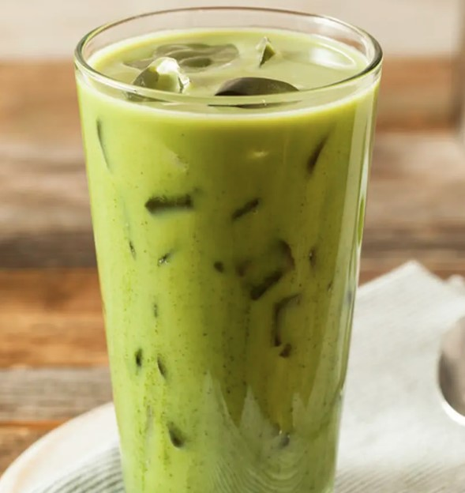
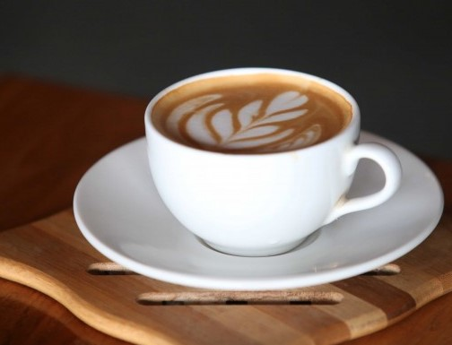
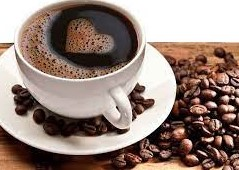

Green Tea
Salah satu aspek utama dari teh hijau adalah kandungan antioksidan yang kaya. Teh hijau mengandung polifenol, seperti katekin dan flavonoid, yang membantu melindungi tubuh dari stres oksidatif dan kerusakan yang disebabkan oleh radikal bebas. Antioksidan ini telah dikaitkan dengan sejumlah manfaat kesehatan, termasuk peningkatan kesehatan jantung, pengurangan risiko penyakit kronis, dan peningkatan fungsi otak.
Kopi Susu
Kopi susu umumnya dibuat dengan mencampurkan espresso atau kopi hitam dengan susu panas. Susu yang ditambahkan memberikan sentuhan kreami dan mengurangi keasaman kopi, sehingga menciptakan harmoni rasa yang sempurna. Minuman ini dapat disajikan panas atau dingin, tergantung selera individu.
Kopi Hitam
Kopi hitam diproduksi dengan biji kopi yang dipanggang dan digiling. Tanpa tambahan susu atau gula, kopi hitam menampilkan rasa yang kuat dan kaya. Keasamannya yang karakteristik dan kekuatan citarasanya membuatnya menjadi pilihan yang digemari oleh para pecinta kopi.